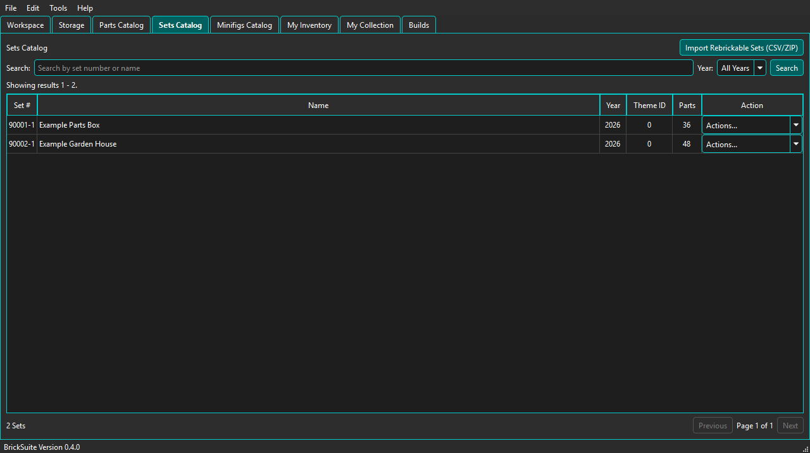
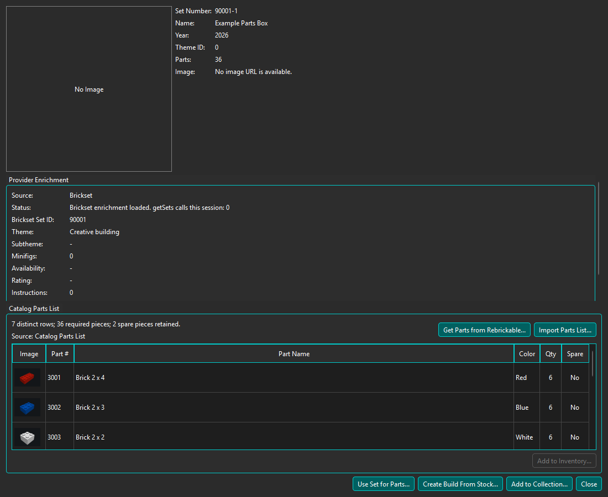
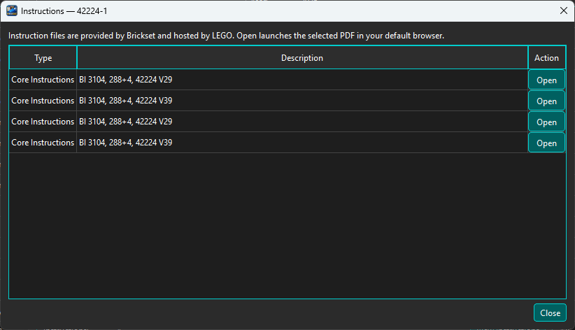
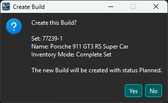

The Sets Catalog is BrickSuite's local reference catalog for LEGO Sets. It is populated from Rebrickable CSV data and can be searched without making a live API request for ordinary catalog browsing.

Use the Import Rebrickable Sets (CSV/ZIP) button at the top of the Sets Catalog to
populate or refresh the local catalog. Select either the downloaded ZIP archive directly or an
extracted sets.csv file. BrickSuite also finds sets.csv in a nested
archive folder.
For the full first-time setup sequence, see Quick Start.
Use the Search field to look for a Set by number or name. The Year filter can narrow the results to a specific year. Choose Search to apply the current criteria.
The results table shows the Set number, name, year, Theme ID, parts count, and an Actions... control for each row. Paging controls at the bottom of the catalog let you move through larger result sets.
Open Actions... → Details for a Set to view its reference information and, when available, provider enrichment.

The upper portion of Set Details shows the local BrickSuite/Rebrickable reference information, including the Set number, name, year, Theme ID, parts count, and cached Set image when available.
Set Details is a modeless window: keep it open while using Add Inventory or returning to other BrickSuite views. Select a row and choose Add to Inventory..., or use its right-click action, to fill the existing Add Inventory window with that Part and Color. Quantity starts at 1; choose how many pieces you actually have. Keep Open supports repeated entry, and replacing a pending entry asks for confirmation. This shortcut is available for local inventory; Remote inventory uses the Host workflow in My Inventory.
Drag the divider between Provider Enrichment and Catalog Parts List to give the table more room. The Provider section can collapse, and BrickSuite remembers the divider position.
The Catalog Parts List automatically displays locally available exact Part, Color, quantity, and spare information when Set Details opens. BrickSuite uses the preferred local Rebrickable inventory revision when one is available and otherwise uses the existing Catalog Parts List fallback. The source line identifies which composition is displayed.
Choose Get Parts from Rebrickable... to explicitly refresh the complete list through the Rebrickable API. This API workflow includes the constituent pieces of Minifigs in the Set so the catalog composition represents the physical pieces needed to assemble it.
If API access is unavailable, choose Import Parts List... and select a Rebrickable parts list in CSV or ZIP form. ZIP files may contain the CSV in a nested folder. Both manual acquisition methods remain available as explicit refresh or replacement workflows and require confirmation when a parts list already exists. Displaying the locally stored Catalog Parts List does not itself fetch composition through the API. Opening Set Details can separately request provider enrichment.
The Provider Enrichment section identifies the active provider used for additional Set information. When Brickset is connected and within the configured daily request threshold, BrickSuite can use Brickset enrichment. This may use cached details or request provider data; it is separate from refreshing the Catalog Parts List. Brickset instruction retrieval is also separate from catalog composition.
Brickset enrichment can include:
The Status line summarizes the provider state for the current Set and can also show
session information such as how many Brickset getSets calls have been made.
Provider configuration, connection testing, and the Brickset daily request threshold are described in Settings.
When Brickset enrichment is active and instruction information is available, Set Details shows a View Instructions button. Choose it to open the instruction list.

The Instructions dialog lists the available instruction files and identifies their type and description. Choose Open for the instruction you want to view.
BrickSuite does not host the instruction PDF itself. Instruction information is provided by Brickset and the PDF is hosted by LEGO. Choosing Open launches the selected PDF using your system's default web browser.
The provider link near the bottom of Set Details opens the current Set on the active provider's website using the system's default browser. For Brickset enrichment, the link is labeled Open on Brickset.
After acquiring a catalog parts list, choose Create Build From Stock... in Set Details. Confirm the required-piece count, review the excluded spare-piece count, and enter the Build name. BrickSuite creates an ordinary Set Build and snapshots the required catalog pieces into its Build requirements. The new Build opens in the existing allocation, missing-parts, pulling, completion, and disassembly workflow.
The snapshot is independent of the catalog definition: refreshing the catalog parts list later does not alter an existing Build. You may create multiple Builds from the same catalog Set.

For Build lifecycle and requirement management, see Builds. For allocation behavior, see Allocate Available.
BrickSuite caches Set images locally when they are available. A cached image can be displayed without downloading it again each time Set Details is opened.
From Set Details, choose Add to Collection to record a Set you already own. Review State, Condition, Completeness, optional Collection-capable Location, nickname, and notes independently. Complete means the user believes all required model pieces are present; optional catalog spare pieces are not included. This does not create a Build or consume loose inventory, and imported parts composition is not required. Add the same Set again for each physical copy you own.
Choose Use Set for Parts... from the Sets Catalog row Actions or Set Details to add a complete catalog composition directly to Inventory without creating a Collection item. In Part Out Set to Inventory, review the required and stored spare quantities, copies (default 1), and New/Used condition (default Used). Include catalog spare Parts is checked by default; clear it to omit stored spare rows. No stored spare rows does not prove that none were supplied. Choose an existing active leaf Storage location or create a new location, initially a Bin named after the Set. You can choose another standard type, including Box. Existing destinations must allow Inventory and have no children. A new child cannot be placed beneath a parent holding Inventory or Collection contents.
Confirm only quantities you physically own. Missing identities, unsafe quantities, and uncertain nested Minifig/Set coverage block part-out. Existing intact Collection copies produce a warning: use My Collection → Disassemble for a copy already recorded there, and Add to Collection to record an intact Set. Remote execution is currently unavailable: perform part-out on the Host/local database.
Review the preview before confirming. Storage, Inventory, and provenance/history identifying the source Set are saved together; keep BrickSuite open while the operation completes. The resulting loose stock is immediately available to Inventory and buildability calculations.
Add to Collection tracks an intact owned Set. Use Set for Parts... creates loose stock directly from a catalog Set without a Collection item. Collection → Disassemble converts an already-recorded owned Set. See My Inventory for the resulting loose stock.
Quick Start | Settings | Builds | Allocate Available | Troubleshooting